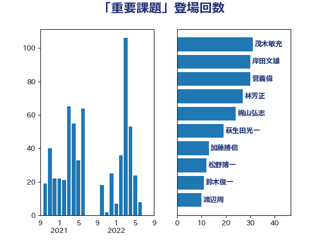

単語「重要課題」

| 茂木敏充 | 自由民主党 | 31 回 |
| 岸田文雄 | 自由民主党 | 30 回 |
| 菅義偉 | 自由民主党 | 30 回 |
| 林芳正 | 自由民主党 | 27 回 |
| 梶山弘志 | 自由民主党 | 24 回 |
| 萩生田光一 | 自由民主党 | 19 回 |
| 加藤勝信 | 自由民主党 | 13 回 |
| 松野博一 | 自由民主党 | 12 回 |
| 鈴木俊一 | 自由民主党 | 11 回 |
| 渡辺周 | 立憲民主党 | 10 回 |
| 小林鷹之 | 自由民主党 | 8 回 |
| 金子恭之 | 自由民主党 | 8 回 |
| 小泉進次郎 | 自由民主党 | 7 回 |
| 武田良太 | 自由民主党 | 7 回 |
| 舩後靖彦 | れいわ新選組 | 7 回 |
| 井上信治 | 自由民主党 | 6 回 |
| 野上浩太郎 | 自由民主党 | 6 回 |
| 三ッ林裕巳 | 自由民主党 | 5 回 |
| 太栄志 | 立憲民主党 | 5 回 |
| 山口壯 | 自由民主党 | 5 回 |
| 山口那津男 | 公明党 | 5 回 |
| 和田有一朗 | 日本維新の会 | 4 回 |
| 岸信夫 | 自由民主党 | 4 回 |
| 笠井亮 | 日本共産党 | 4 回 |
| 西岡秀子 | 国民民主党 | 4 回 |
| 西銘恒三郎 | 自由民主党 | 4 回 |
| 佐藤啓 | 自由民主党 | 3 回 |
| 勝部賢志 | 立憲民主党 | 3 回 |
| 國場幸之助 | 自由民主党 | 3 回 |
| 尾身朝子 | 自由民主党 | 3 回 |
| 末松信介 | 自由民主党 | 3 回 |
| 泉健太 | 立憲民主党 | 3 回 |
| 浜野喜史 | 国民民主党 | 3 回 |
| 赤澤亮正 | 自由民主党 | 3 回 |
| 鬼木誠 | 立憲民主党 | 3 回 |
| 鷲尾英一郎 | 自由民主党 | 3 回 |
| 下野六太 | 公明党 | 2 回 |
| 中西祐介 | 自由民主党 | 2 回 |
| 伊藤孝江 | 公明党 | 2 回 |
| 古屋範子 | 公明党 | 2 回 |
| 古川禎久 | 自由民主党 | 2 回 |
| 古賀友一郎 | 自由民主党 | 2 回 |
| 宮本周司 | 自由民主党 | 2 回 |
| 宮路拓馬 | 自由民主党 | 2 回 |
| 小渕優子 | 自由民主党 | 2 回 |
| 平沢勝栄 | 自由民主党 | 2 回 |
| 有村治子 | 自由民主党 | 2 回 |
| 本田太郎 | 自由民主党 | 2 回 |
| 東徹 | 日本維新の会 | 2 回 |
| 森本真治 | 立憲民主党 | 2 回 |
| 江島潔 | 自由民主党 | 2 回 |
| 津島淳 | 自由民主党 | 2 回 |
| 浜地雅一 | 公明党 | 2 回 |
| 田名部匡代 | 立憲民主党 | 2 回 |
| 田島麻衣子 | 立憲民主党 | 2 回 |
| 田所嘉徳 | 自由民主党 | 2 回 |
| 田村貴昭 | 日本共産党 | 2 回 |
| 石井啓一 | 公明党 | 2 回 |
| 石井正弘 | 自由民主党 | 2 回 |
| 石井章 | 日本維新の会 | 2 回 |
| 石川博崇 | 公明党 | 2 回 |
| 磯崎仁彦 | 自由民主党 | 2 回 |
| 神谷裕 | 立憲民主党 | 2 回 |
| 福山哲郎 | 立憲民主党 | 2 回 |
| 藤田文武 | 日本維新の会 | 2 回 |
| 赤池誠章 | 自由民主党 | 2 回 |
| 赤羽一嘉 | 公明党 | 2 回 |
| 野田聖子 | 自由民主党 | 2 回 |
| 鈴木隼人 | 自由民主党 | 2 回 |
| 三木圭恵 | 日本維新の会 | 1 回 |
| 上杉謙太郎 | 自由民主党 | 1 回 |
| 世耕弘成 | 自由民主党 | 1 回 |
| 中島克仁 | 立憲民主党 | 1 回 |
| 中川郁子 | 自由民主党 | 1 回 |
| 中西健治 | 自由民主党 | 1 回 |
| 中野洋昌 | 公明党 | 1 回 |
| 亀岡偉民 | 自由民主党 | 1 回 |
| 伊東良孝 | 自由民主党 | 1 回 |
| 伊藤孝恵 | 国民民主党 | 1 回 |
| 伊藤岳 | 日本共産党 | 1 回 |
| 佐藤茂樹 | 公明党 | 1 回 |
| 吉川ゆうみ | 自由民主党 | 1 回 |
| 吉川赳 | 無所属 | 1 回 |
| 吉田久美子 | 公明党 | 1 回 |
| 吉田忠智 | 立憲民主党 | 1 回 |
| 堀井学 | 自由民主党 | 1 回 |
| 大塚耕平 | 国民民主党 | 1 回 |
| 大家敏志 | 自由民主党 | 1 回 |
| 宗清皇一 | 自由民主党 | 1 回 |
| 小寺裕雄 | 自由民主党 | 1 回 |
| 小沢雅仁 | 立憲民主党 | 1 回 |
| 山東昭子 | 自由民主党 | 1 回 |
| 山田賢司 | 自由民主党 | 1 回 |
| 岡本あき子 | 立憲民主党 | 1 回 |
| 岩屋毅 | 自由民主党 | 1 回 |
| 岸真紀子 | 立憲民主党 | 1 回 |
| 市村浩一郎 | 日本維新の会 | 1 回 |
| 平沼正二郎 | 自由民主党 | 1 回 |
| 後藤茂之 | 自由民主党 | 1 回 |
| 斎藤洋明 | 自由民主党 | 1 回 |
| 早坂敦 | 日本維新の会 | 1 回 |
| 木村英子 | れいわ新選組 | 1 回 |
| 末次精一 | 立憲民主党 | 1 回 |
| 本庄知史 | 立憲民主党 | 1 回 |
| 杉久武 | 公明党 | 1 回 |
| 松木けんこう | 立憲民主党 | 1 回 |
| 松沢成文 | 日本維新の会 | 1 回 |
| 根本匠 | 自由民主党 | 1 回 |
| 森田俊和 | 立憲民主党 | 1 回 |
| 横沢高徳 | 立憲民主党 | 1 回 |
| 武部新 | 自由民主党 | 1 回 |
| 河野太郎 | 自由民主党 | 1 回 |
| 浅田均 | 日本維新の会 | 1 回 |
| 浜口誠 | 国民民主党 | 1 回 |
| 浜田聡 | NHK党 | 1 回 |
| 清水真人 | 自由民主党 | 1 回 |
| 渡辺猛之 | 自由民主党 | 1 回 |
| 源馬謙太郎 | 立憲民主党 | 1 回 |
| 片山大介 | 日本維新の会 | 1 回 |
| 牧原秀樹 | 自由民主党 | 1 回 |
| 玄葉光一郎 | 立憲民主党 | 1 回 |
| 田嶋要 | 立憲民主党 | 1 回 |
| 田村智子 | 日本共産党 | 1 回 |
| 田畑裕明 | 自由民主党 | 1 回 |
| 畦元将吾 | 自由民主党 | 1 回 |
| 石井苗子 | 日本維新の会 | 1 回 |
| 福重隆浩 | 公明党 | 1 回 |
| 秋野公造 | 公明党 | 1 回 |
| 稲津久 | 公明党 | 1 回 |
| 竹内真二 | 公明党 | 1 回 |
| 竹内譲 | 公明党 | 1 回 |
| 笹川博義 | 自由民主党 | 1 回 |
| 細田健一 | 自由民主党 | 1 回 |
| 細田博之 | 自由民主党 | 1 回 |
| 緑川貴士 | 立憲民主党 | 1 回 |
| 美延映夫 | 日本維新の会 | 1 回 |
| 舞立昇治 | 自由民主党 | 1 回 |
| 落合貴之 | 立憲民主党 | 1 回 |
| 藤丸敏 | 自由民主党 | 1 回 |
| 藤木眞也 | 自由民主党 | 1 回 |
| 谷合正明 | 公明党 | 1 回 |
| 足立康史 | 日本維新の会 | 1 回 |
| 輿水恵一 | 公明党 | 1 回 |
| 近藤和也 | 立憲民主党 | 1 回 |
| 逢坂誠二 | 立憲民主党 | 1 回 |
| 里見隆治 | 公明党 | 1 回 |
| 野田佳彦 | 立憲民主党 | 1 回 |
| 金子恵美 | 立憲民主党 | 1 回 |
| 金村龍那 | 日本維新の会 | 1 回 |
| 金田勝年 | 自由民主党 | 1 回 |
| 鈴木庸介 | 立憲民主党 | 1 回 |
| 鈴木敦 | 国民民主党 | 1 回 |
| 長友慎治 | 国民民主党 | 1 回 |
| 階猛 | 立憲民主党 | 1 回 |
| 青木愛 | 立憲民主党 | 1 回 |
| 青柳陽一郎 | 立憲民主党 | 1 回 |
| 額賀福志郎 | 自由民主党 | 1 回 |
| 馬場伸幸 | 日本維新の会 | 1 回 |
| 高木かおり | 日本維新の会 | 1 回 |
| 高橋はるみ | 自由民主党 | 1 回 |
| 高橋光男 | 公明党 | 1 回 |